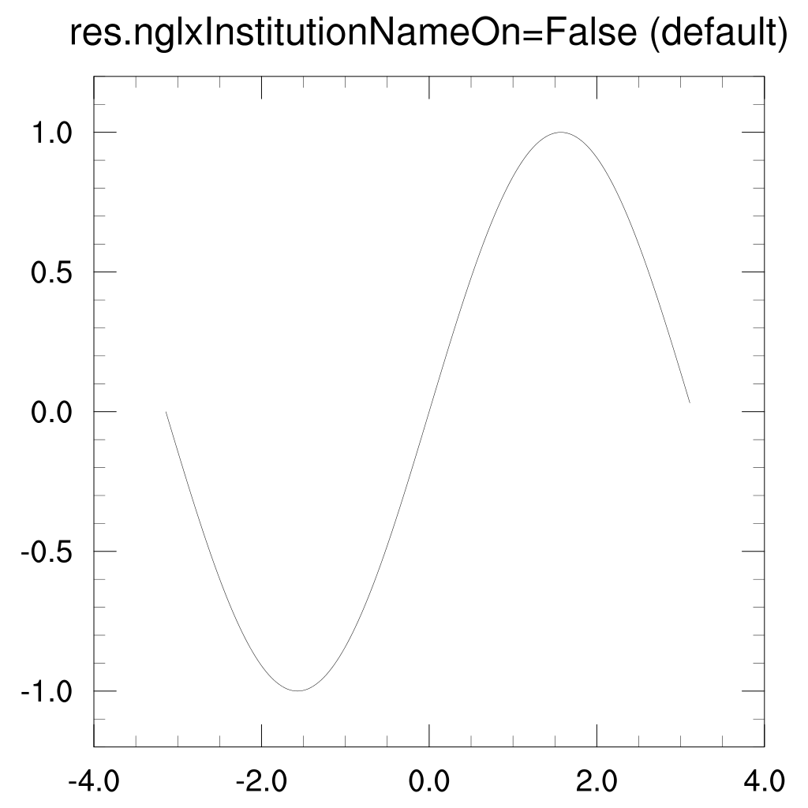
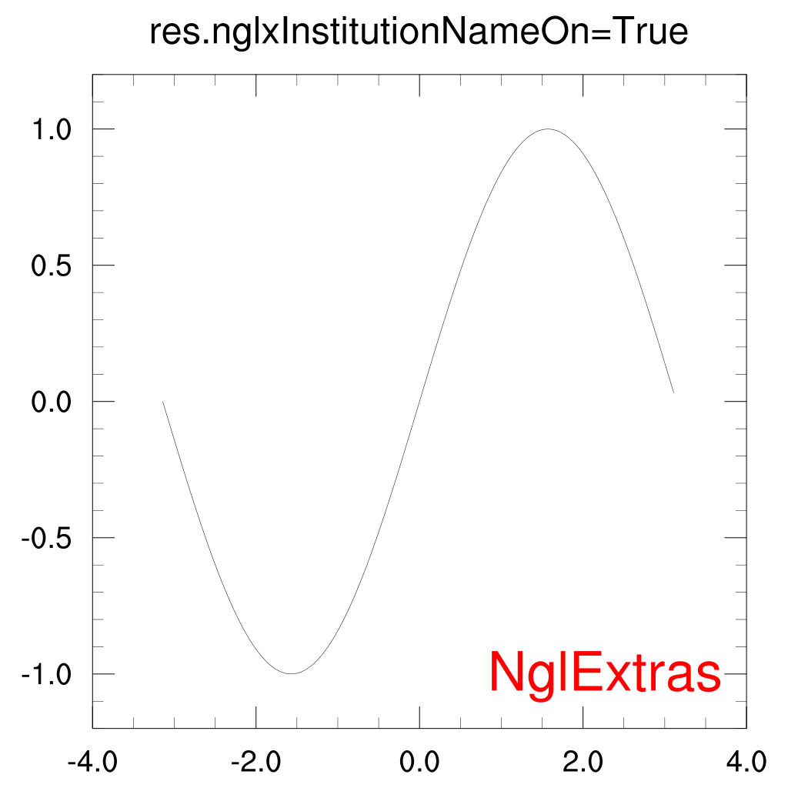

One of the most useful features of nglextras is the plot modification system. This allows you to create extra resources that affect plotting behaviour, and have these recognised by Ngl plotting functions without modifying their code.
The idea behind this system is simple: to be able to create arbitrary modifications to plotting functions, which can be combined in a way the user chooses.
Plot modifications work by automatically wrapping plotting functions with code that performs the modifications. It is of course possible to write function wrappers that apply custom modifications to plots. However, using this system is more flexible as the same modifications can be re-used for multiple plotting functions and also combined with other modifications..
A plot modification consists of an instance of a class derived from nglextras.modification.PlotModifier. The PlotMofifier class has the following form:
- class nglextras.modification.PlotModifier
Base class for plot modification objects.
All modifiers should inherit from this object to ensure that the required methods exist.
- PlotModifier.resource_names = []
- PlotModifier.preplot(*args)
Method called before a plot is created.
This method recieves the full argument list to the plotting function which may be modified. Generally this method should parse the resource list for resource names it is associated with and take some action on these. Returns None.
- PlotModifier.postplot(wks, plot)
method called after a plot is created.
This method receives the workstation and the plot object. Modifications can then be applied to the plot. Returns None.
The class variable resource_names is a list which must include the names of all the special resources defined by the modifier. This allows these special resource names to be removed from the resource list before being passed to Ngl plotting functions.
The methods preplot() and postplot() should be overridden so as to produce the required modifications. Typically preplot() will look for resource variables, and parse them to determine which features of the current modification are required. The actual modifications are then made to the plot in postplot().
Modifications are applied to plotting functions via the nglextras.modification.ModificationManager decorator class. The class method addModifiers() is called with an instance the PlotMofifier to be applied:
ModificationManager.addModifier(MyPlotModifier())
An instance of the ModificationManager class can then be created with an Ngl plotting function as the argument to its constructor. This will add all the modifications known to the ModificationManager to the plotting function:
contour_map_mod = ModificationManager(Ngl.contour_map)
The following example creates a plot modifier that adds an annotation to the lower right corner of the plot. This annotation could be the name of your institution or research group etc.:
"""Example plot modification.
Add a resource to control an institution name appearing in the lower
right corner of a plot.
"""
import numpy as np
import Ngl
from nglextras.modification import PlotModifier, ModificationManager
class InstitutionName(PlotModifier):
# This class add the resource name "nglxInstitutionNameOn" which
# turns on or off the plotting of the name of an institution name
# in the lower right corner of the plot.
resource_names = ["nglxInstitutionNameOn"]
def preplot(self, *args):
"""
Determine if the 'nglxInsitutionNameOn' resource is set to True.
"""
# Retrieve all resource variables. Some plot types take two resources
# variables as input.
resource_vars = list()
for arg in args:
if isinstance(arg, Ngl.Resources):
resource_vars.append(arg)
# Decide if the institution name should be drawn or not.
self._draw_institution_name = False
for res in resource_vars:
if getattr(res, "nglxInstitutionNameOn", False):
self._draw_institution_name = True
def postplot(self, wks, plot):
"""Draw the institution name."""
if not self._draw_institution_name:
# Return early if no modification is required.
return
# Create resources for the text itself and the annotation.
txres = Ngl.Resources()
txres.nglDraw = False
txres.txFontColor = "red"
anres = Ngl.Resources()
anres.amSide = "Right"
anres.amJust = "BottomRight"
anres.amOrthogonalPosF = .46
anres.amParallelPosF = -.46
# Create the text and attach it to the plot as an annotation.
text = Ngl.text_ndc(wks, "NglExtras", 0., 0., txres)
anno = Ngl.add_annotation(plot, text, anres)
if __name__ == "__main__":
# Add an instance of our modifier to the modification manager.
ModificationManager.addModifiers(InstitutionName())
# Wrap the Ngl function xy to create a modified version that
# accepts our nglxInstitutionNameOn resource.
xymod = ModificationManager(Ngl.xy)
# Create a workstation.
wkres = Ngl.Resources()
wks = Ngl.open_wks("png", "plotmod_example", wkres)
# Create a set of resources that turn on the institution name.
res = Ngl.Resources()
res.tiMainString = "res.nglxInstitutionNameOn=False (default)"
x = np.arange(-np.pi, np.pi, np.pi/100.)
y = np.sin(x)
# Plot y=sin(x) with the instutution name turned off.
plot = xymod(wks, x, y, res)
# Plot y=sin(x) with the institution name turned on.
res.nglxInstitutionNameOn = True
res.tiMainString = "res.nglxInstitutionNameOn=True"
plot = xymod(wks, x, y, res)
Ngl.end()
which produces the following plots:
 